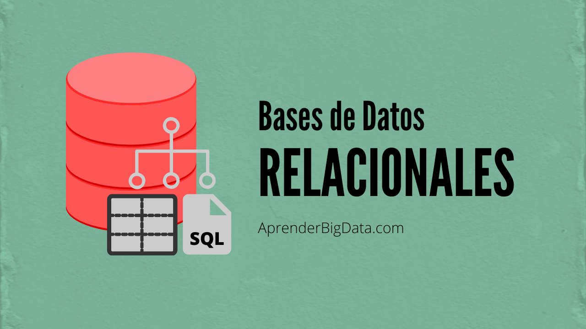

Bases de datos relacionales
Las bases de datos relacionales son un tipo de sistema de almacenamiento de datos que organiza la información en tablas con filas y columnas. Cada tabla representa una entidad, y las relaciones entre ellas se establecen mediante claves primarias y foráneas. Este modelo permite manejar grandes volúmenes de datos de manera estructurada, segura y eficiente, facilitando la consulta y manipulación a través del lenguaje SQL. Son ampliamente utilizadas en aplicaciones empresariales, sitios web y sistemas de gestión de información.
Características de las Bases de Datos Relacionales:
Estructura en tablas: La información se organiza en tablas (también llamadas relaciones), lo que facilita su comprensión y manejo.
Claves primarias y foráneas: Se utilizan para identificar registros únicos y establecer relaciones entre tablas.
Integridad de los datos: Se aplican reglas que aseguran la consistencia y validez de los datos almacenados.
Independencia lógica y física: Los cambios en la estructura física no afectan el acceso lógico a los datos.
